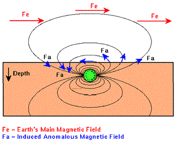
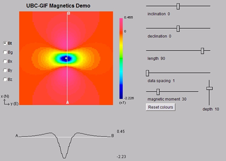

      <form>
        
        <center>
          
        <table border="0" cellpadding="0" cellspacing="0" width="750">

            <tbody>

              <tr>

                <td colspan="2" valign="top">
                 <p>On the cross section, <span class="style2">red </span>arrows
                    show Earth's field's direction, <span class="style3">blue</span> arrows
                    show induced field vectors, and the sign of measurements
                    can be determined by comparing the directions of these two
                    fields at each location on the Earth's surface. On the map
                    and profile image (which shows the dipole applet screen),
                    pay particular attention to the amplitudes. Also note that
                    the profile is approximately anti-symmetric, NOT at 45&deg; latitude
                    but at around 30&deg; latitude. <b><br>

                      <br>

                        1.
                    <input name="direction" value="OFF" onclick="MM_swapImage('dipapp','','../../_images/dipole-i0.jpg','dipole','','../../_images/dipole-eq.gif',1)" checked="checked" type="radio">
                    </b>- (Initial image) Total field magnetic anomaly over a
                      buried dipole at the magnetic equator. 
                      <b><br>

                      2.
                      <input name="direction" value="OFF" onclick="MM_swapImage('dipapp','','../../_images/dipole-i90.jpg','dipole','','../../_images/dipole-pole.gif',1)" type="radio">
                      </b>- Total field magnetic anomaly over a buried dipole at
                      the magnetic north pole. 
                      <b><br>

                      3.
                      <input name="direction" value="OFF" onclick="MM_swapImage('dipapp','','../../_images/dipole-i30.jpg','dipole','','../../_images/dipole-midlat.gif',1)" type="radio">
                      </b>- Total field magnetic anomaly over a buried dipole at
                      magnetic mid latitudes. 
                    </p>

                    
              <p> </p>

                
              <hr size="1" width="75%"></td>
            </tr>

              <tr>

                <td valign="top">                  
              <p align="center"></p>
                
                <td valign="top">
              <p align="center"></p>

                </td>

              </tr>

            
          </tbody>
          
        </table>

        </center>

      </form>